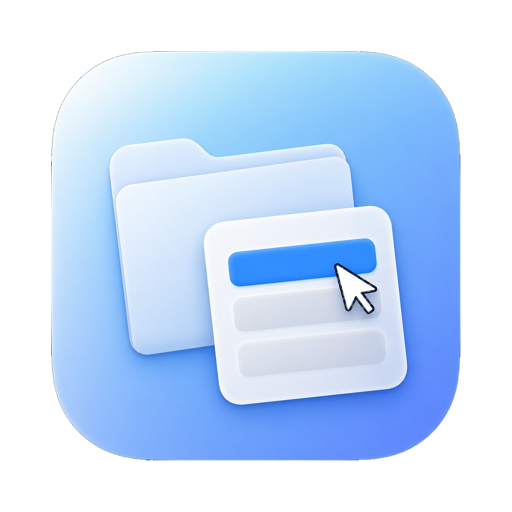
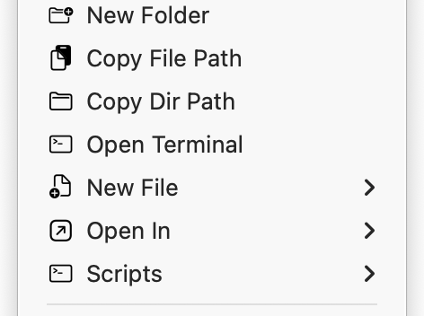
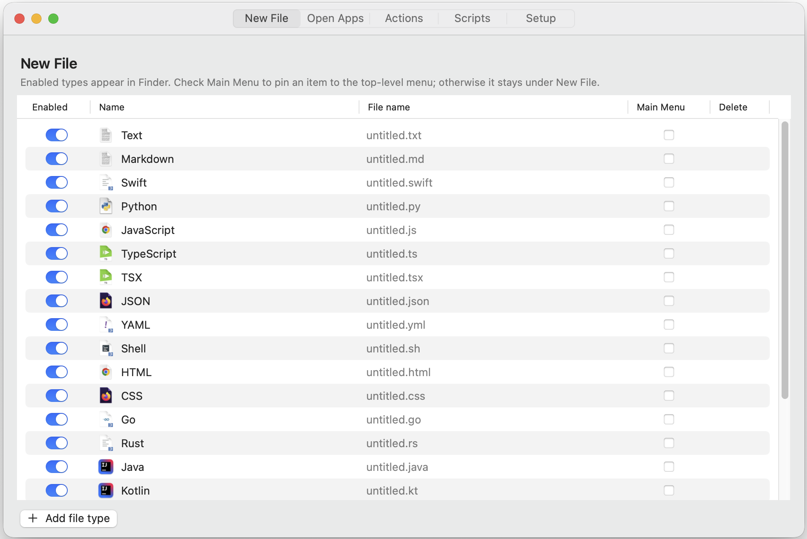
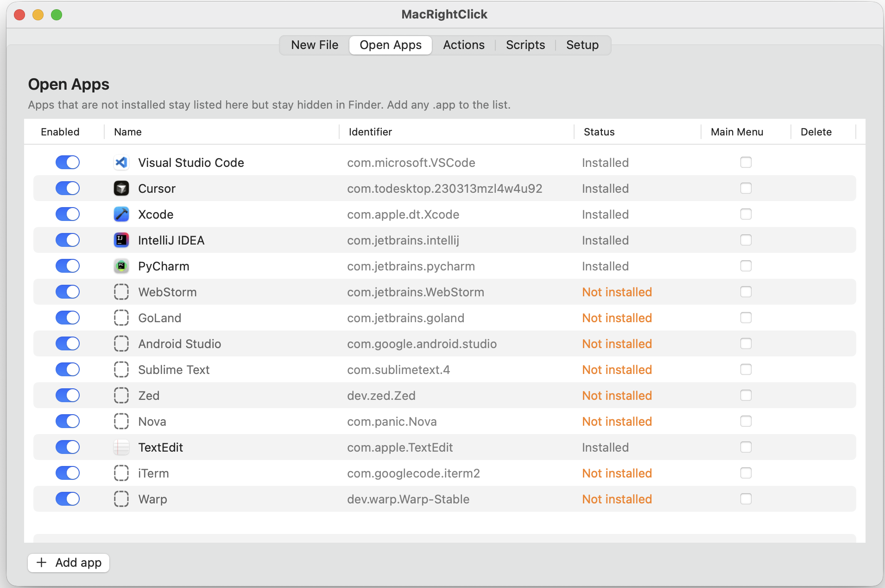
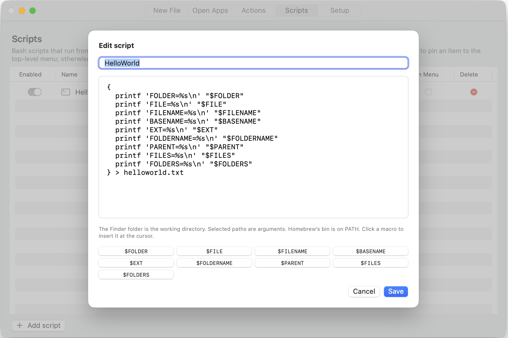

macOS 14+ · Developer ID notarized
Create files, open the selection in any app, run a script, or copy a path — from the right-click menu you already use.
Version 1.0.0 · Drag to Applications



